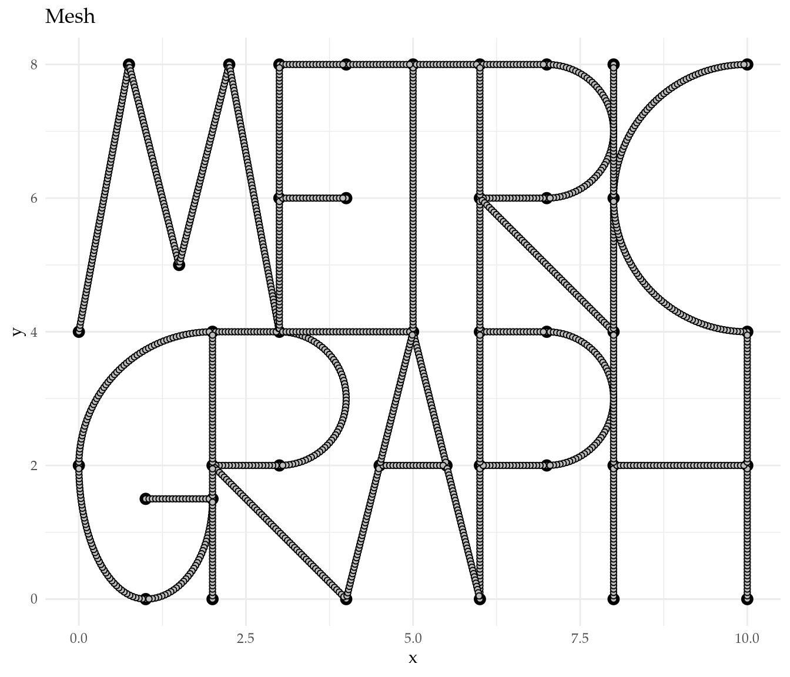
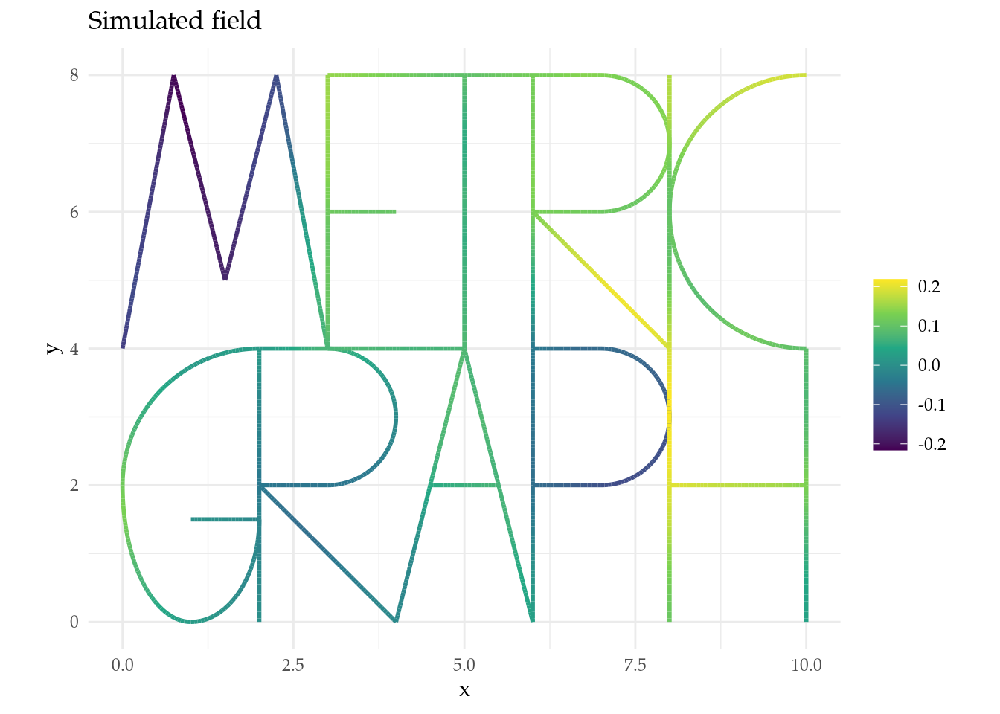
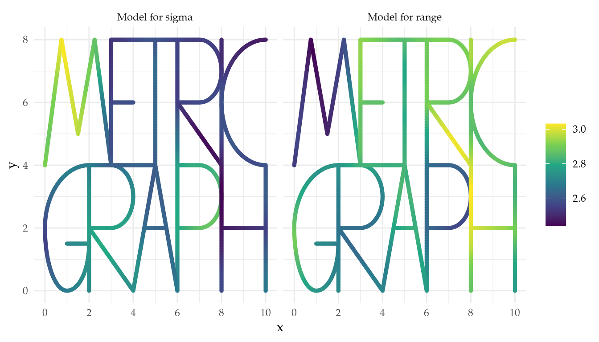
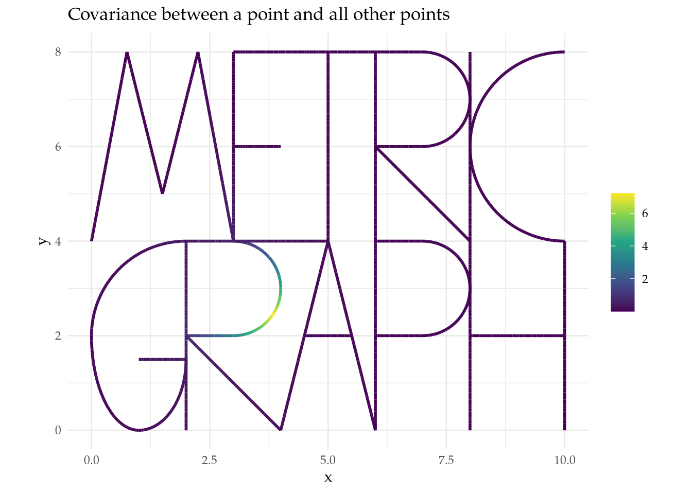
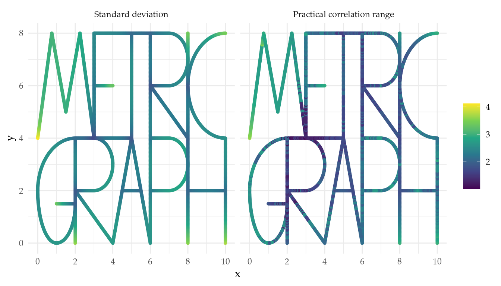

Go back to the About page.
Let us set some global options for all code chunks in this document.
knitr::opts_chunk$set(
message = FALSE, # Disable messages printed by R code chunks
warning = FALSE, # Disable warnings printed by R code chunks
echo = TRUE, # Show R code within code chunks in output
include = TRUE, # Include both R code and its results in output
eval = TRUE, # Evaluate R code chunks
cache = FALSE, # Enable caching of R code chunks for faster rendering
fig.align = "center",
out.width = "100%",
retina = 2,
error = TRUE,
collapse = FALSE
)
rm(list = ls())
set.seed(1982)edges <- logo_lines() # This is a function from MetricGraph package that returns a list of edges
logo_graph <- metric_graph$new(edges = edges) # Create a new graph object
#logo_graph$prune_vertices()
logo_graph$build_mesh(h = 0.05) # Build the mesh
# Plot graph with mesh
logo_graph$plot(mesh = TRUE) +
ggtitle("Mesh") +
theme_minimal() +
theme(text = element_text(family = "Palatino"))
Below we simulate a Whittle–Matérn field \(\dot{u}\) (cov) from the
model
\[\begin{equation} \label{SPDE}\tag{1} (\kappa^2-\Delta)^{\alpha/2}\tau \dot{u} = \mathcal{W}. \end{equation}\]
We use the matern parameterization, where the parameters
are \(\nu\) (nu), \(\sigma\) (sigma), and \(\rho\) (range), and are
related to the spde parameterization \(\eqref{SPDE}\) as follows.
sigma <- 0.1
range <- 10
nu <- 1.5 # Smoothness parameter
# Construct the approximation
op <- matern.operators(nu = nu,
sigma = sigma,
range = range,
parameterization = "matern",
graph = logo_graph)
# Simulate the field
cov <- as.vector(simulate(op))
# Plot the field
logo_graph$plot_function(X = cov, vertex_size = 0, plotly = F) +
ggtitle("Simulated field") +
theme_minimal() +
theme(text = element_text(family = "Palatino"))
We use the simulated field to build a non-stationary covariance function for a generalized Whittle–Matérn field \(u\). That is, we consider the model
\[\begin{equation} \label{NS-SPDE}\tag{2} (\kappa^2(s)-\Delta)^{\alpha/2}\tau(s) u = \mathcal{W}, \end{equation}\]
with non-stationary parameters (in the matern
parameterization) given by
\[\begin{equation} \label{logregressions} \begin{aligned} \log(\sigma(s)) &= \theta_1 + \theta_3 \text{cov}(s),\\ \log(\rho(s)) &= \theta_2 + \theta_4 \text{cov}(s). \end{aligned} \end{equation}\]
Below theta \(= (\theta_1,
\theta_2, \theta_3, \theta_4)\).
# Non-stationary parameters
B.sigma = cbind(0, 1, 0, cov, 0)
B.range = cbind(0, 0, 1, 0, cov)
# Log-regression coefficients
theta = c(1,1,-0.5,0.5)
# Build the models for sigma and range
model_for_sigma <- exp(B.sigma[,-1]%*%theta)
model_for_range <- exp(B.range[,-1]%*%theta)# Extract the mesh locations in Euclidean coordinates
xypoints <- logo_graph$mesh$V
# Define data frames for plotting
sigma_df <- data.frame(x = xypoints[,1], y = xypoints[,2], z = model_for_sigma, .group = 1)
range_df <- data.frame(x = xypoints[,1], y = xypoints[,2], z = model_for_range, .group = 2)
datarep <- rbind(sigma_df, range_df)
# Plot details
group_labels <- c("Model for sigma", "Model for range")
# Plot details
min_x <- min(datarep$x) |> round(2)
max_x <- max(datarep$x) |> round(2)
min_y <- min(datarep$y) |> round(2)
max_y <- max(datarep$y) |> round(2)
# Create a base plot
base_plot <- ggplot() +
geom_point(data = sigma_df, aes(x = x, y = y), color = "black", size = 0.5, shape = 1) +
scale_x_continuous(labels = function(x) paste0(x), name = "x", breaks = seq(min_x, max_x, by = 2)) +
scale_y_continuous(labels = function(y) paste0(y), name = "y", breaks = seq(min_y, max_y, by = 2)) +
theme_minimal() +
theme(text = element_text(family = "Palatino"))
# Create individual plots for each group and overlay data points
group_plots <- lapply(unique(datarep$.group), function(gr) {
geom_point(data = subset(datarep, .group == gr), aes(x = x, y = y, color = z), size = 1)
})
# Combine the base plot and the group plots
combined_plot <- base_plot +
facet_wrap(~ .group, ncol = 2, labeller = labeller(.group = function(variable, value) {
return(group_labels[value])
})) +
group_plots +
scale_color_gradient(name = "") +
labs(color = "") +
scale_color_viridis_c(option = "D")
# Print the combined plot
print(combined_plot)
nu <- 0.5
# Construct the approximation
ns_op <- rSPDE::spde.matern.operators(graph = logo_graph,
parameterization = "matern",
B.sigma = B.sigma,
B.range = B.range,
theta = theta,
nu = nu)
# Covariance matrix
est_cov_matrix <- ns_op$covariance_mesh()
# Precision matrix
Q <- precision(ns_op)rownumber = 300 # Choose a row number
rowfromcov = est_cov_matrix[rownumber, ] # Get a row from the covariance matrix
rowfromQ = solve(Q, replace(numeric(dim(Q)[1]), rownumber, 1)) # Another way to get a row from the covariance matrix
sum(rowfromcov - rowfromQ) # Check they are the same## [1] 9.238822e-14# Plot the covariance between a point and all other points
logo_graph$plot_function(X = rowfromQ, vertex_size = 0) +
ggtitle("Covariance between a point and all other points") +
theme_minimal() +
theme(text = element_text(family = "Palatino"))
# Compute distance matrix on the mesh
logo_graph$compute_geodist_mesh()
# Get the distance matrix
dist_matrix <- logo_graph$mesh$geo_dist
# Define correlation threshold
cor_threshold <- 1
# Initialize vector to store the practical correlation range
est_range = rep(NA, dim(est_cov_matrix)[1])
# Compute the practical correlation range
for (i in 1:dim(est_cov_matrix)[1]) {
rowi <- est_cov_matrix[i,]
sorted <- sort(rowi, decreasing = TRUE, index.return = TRUE)
index_cor_smaller_pcr <- which(sorted$x < cor_threshold)[1]
pos_dist_matrix <- sorted$ix[index_cor_smaller_pcr]
est_range[i] <- dist_matrix[i, pos_dist_matrix]
}
# Compute the standard deviation
est_sigma <- sqrt(diag(INLA::inla.qinv(Q))) # It can also be computed as sqrt(Matrix::diag(est_cov_matrix))sd_df <- data.frame(x = xypoints[,1], y = xypoints[,2], z = est_sigma, .group = 1)
rho_df <- data.frame(x = xypoints[,1], y = xypoints[,2], z = est_range, .group = 2)
datarep <- rbind(sd_df, rho_df)
group_labels <- c("Standard deviation", "Practical correlation range")
min_x <- min(datarep$x) |> round(2)
max_x <- max(datarep$x) |> round(2)
min_y <- min(datarep$y) |> round(2)
max_y <- max(datarep$y) |> round(2)
# Create a base plot
base_plot <- ggplot() +
geom_point(data = sd_df, aes(x = x, y = y), color = "black", size = 0.5, shape = 1) +
scale_x_continuous(labels = function(x) paste0(x), name = "x", breaks = seq(min_x, max_x, by = 2)) +
scale_y_continuous(labels = function(y) paste0(y), name = "y", breaks = seq(min_y, max_y, by = 2)) +
theme_minimal() +
theme(text = element_text(family = "Palatino"))
# Create individual plots for each group and overlay data points
group_plots <- lapply(unique(datarep$.group), function(gr) {
geom_point(data = subset(datarep, .group == gr), aes(x = x, y = y, color = z), size = 1)
})
# Combine the base plot and the group plots
combined_plot <- base_plot +
facet_wrap(~ .group, ncol = 2, labeller = labeller(.group = function(variable, value) {
return(group_labels[value])
})) + # Specify custom labels for facet_wrap
group_plots +
scale_color_gradient(name = "") +
labs(color = "") +
scale_color_viridis_c(option = "D")
# Print the combined plot
print(combined_plot)
We used R version 4.4.0 (R Core Team 2024) and the following R packages: here v. 1.0.1 (Müller 2020), htmltools v. 0.5.8.1 (Cheng et al. 2024), INLA v. 24.6.27 (Rue, Martino, and Chopin 2009; Lindgren, Rue, and Lindström 2011; Martins et al. 2013; Lindgren and Rue 2015; De Coninck et al. 2016; Rue et al. 2017; Verbosio et al. 2017; Bakka et al. 2018; Kourounis, Fuchs, and Schenk 2018), inlabru v. 2.10.1.9010 (Yuan et al. 2017; Bachl et al. 2019), knitr v. 1.47 (Xie 2014, 2015, 2024), listviewer v. 4.0.0 (de Jong, Gainer, and Russell 2023), mapview v. 2.11.2 (Appelhans et al. 2023), MetricGraph v. 1.3.0.9000 (Bolin, Simas, and Wallin 2023b, 2023a, 2023c, 2024; Bolin et al. 2023), plotly v. 4.10.4 (Sievert 2020), rmarkdown v. 2.27 (Xie, Allaire, and Grolemund 2018; Xie, Dervieux, and Riederer 2020; Allaire et al. 2024), rSPDE v. 2.3.3.9000 (Bolin and Kirchner 2020; Bolin and Simas 2023; Bolin, Simas, and Xiong 2023), sf v. 1.0.16 (Pebesma 2018; Pebesma and Bivand 2023), tidyverse v. 2.0.0 (Wickham et al. 2019), TSstudio v. 0.1.7 (Krispin 2023), xaringanExtra v. 0.8.0 (Aden-Buie and Warkentin 2024).